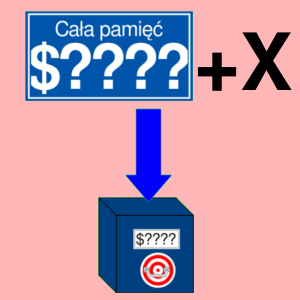
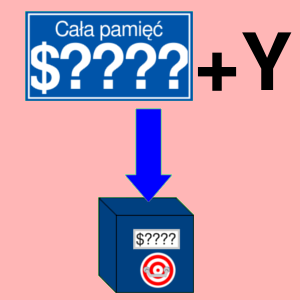

ADC
Dodawanie z przeniesieniem
Opis
Operacja dodawania realizowana w procesorze 6502. Pierwszy składnik jest pobierany z akumulatora, natomiast drugi jest pobierany z pamięci. Wynik jest zapisywany w akumulatorze.
Do wyniku jest dodawana również wartość flagi przeniesienia, po czym sama flaga przyjmuje wartość 0. Jest to przydatna funkcja, gdy chcemy sumować liczby w reprezentacji NKB nie mieszczące się w jednym bajcie np. po dodaniu liczb $FE (254D) i $02 (2D). Suma wynosi $100, a ta liczba mieści się w dwóch bajtach, a akumulator ma pojemność 1 B. Na szczęście wartość z najstarszego bajtu mieści się w jednym bicie i zostaje zapisana w fladze przeniesienia. Można tą flagę "dodać" do starszego bajtu wyniku. Dla podanego przykładu młodszy bajt wynosi z kolei $00. Starszy wynosił wcześniej $00, więc po dodaniu przeniesienia ma wartość $01. Te liczby są koło siebie i jeśli zostały zapisane w kolejności zgodną z architekturą little-endian, to tworzą razem liczbę $100, czyli poprawną sumę liczb $FE i $02. Sama flaga przeniesienia przyjmuje wartość zero po dodaniu.
Jednak możliwość dodawania z przeniesieniem ma też wadę - jeśli do sumy zostaje dodana flaga przeniesienia, a ta wynosi wartość jeden, to wtedy suma zapisana w akumulatorze jest o jeden większa, niż suma dwóch liczb, które biorą w operacji, np. gdy dodamy liczby $02 i $02, a flaga przeniesienia jest wtedy równa 1, to akumulator przyjmie wartość $05, a to nie jest suma liczb $02 i $02. Powodem jest dodanie przeniesienia do właściwego wyniku. Suma dwóch liczb podanych w przykładzie jest równa $04, więc dodanie przeniesienia daje liczbę $05. Dlatego należy zastosować operację CLC przed dodawaniem, jeśli przeniesienie jest równe 1.
Liczby w operacji dodawania są ze znakiem (U2). Jeśli poprawnej sumy nie można przedstawić w reprezentacji U2 dla jednego bajtu, to wtedy jest ustawiana flaga przepełnienia (V) na wartość 1. Na przykład suma liczb $7F (01111111B, 127D) i $01 (00000001B, 1D) wynosi 128. Liczba ta w systemie binarnym ma wartość 10000000, a taka w reprezentacji U2 ma wartość -128, co nie jest poprawnym wynikiem.
W prawdziwym procesorze 6502, jeśli flaga D jest ustawiona na jeden, liczby są w kodowaniu BCD. Jednak w tej symulacji składniki zawsze są w reprezentacji U2, niezależnie od stanu flagi D.
Rozkaz ADC odpowiada w przybliżeniu sekwencji instrukcji w języku wysokiego poziomu: A = A + L + C; C = 0;, gdzie L oznacza liczbę ze znakiem.
Operacja wpływa na flagi: N, V, Z, C.
Tabela opkodów
| Opkod | Tryb adresowania | Czas wykonywania (cykle) |
|---|---|---|
| $69 |  |
2 |
| $65 |  |
3 |
| $75 |  |
4 |
| $6D |  |
4 |
| $7D |  | 4* |
| $79 |  | 4* |
| $61 |  |
6 |
| $71 |  |
5* |